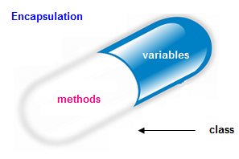

Encapsulate the Data

Goal:
Encapsulate the member variables and prevent them from being adversely changed.
Steps:
- Change all of the member variables to have a private or protected access modifier.
- Make getters and setters for every member variable.
- Place constraints on every member variable's setter as described in the comments
- Get all JUnit tests to pass.